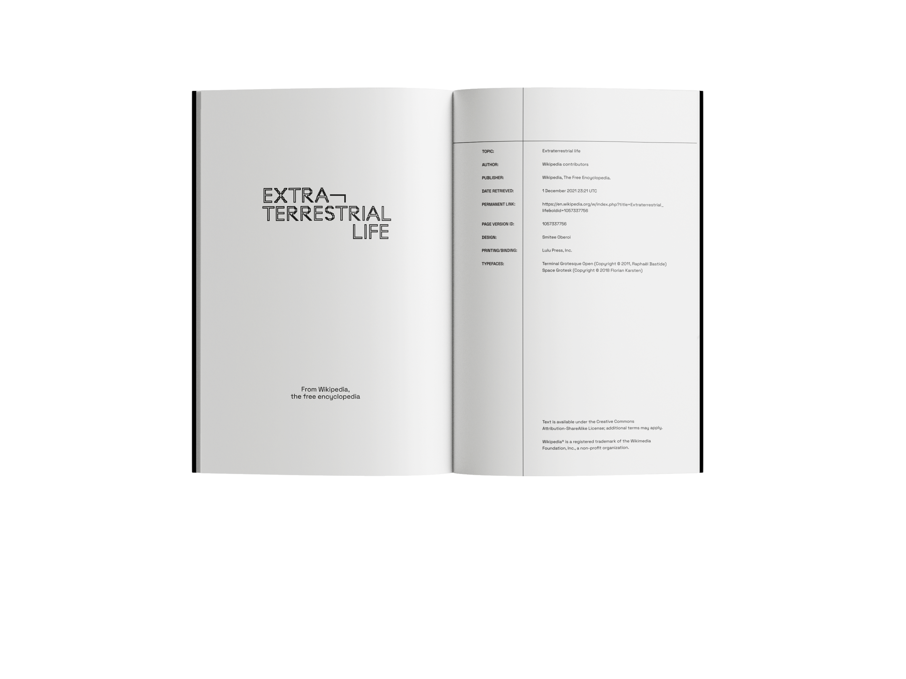
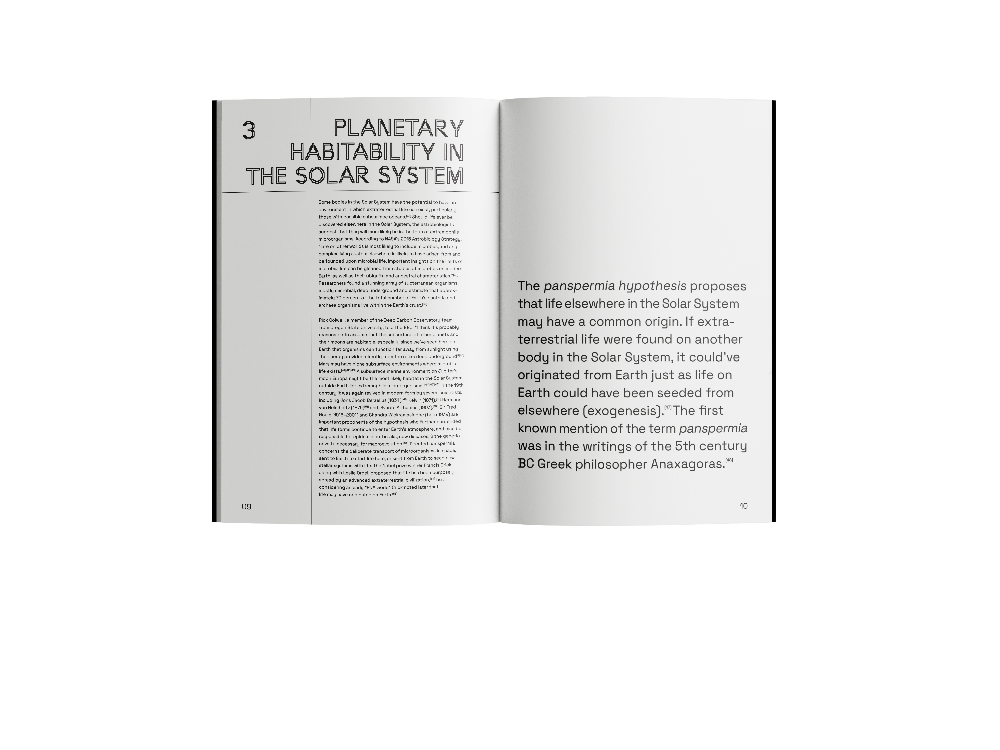
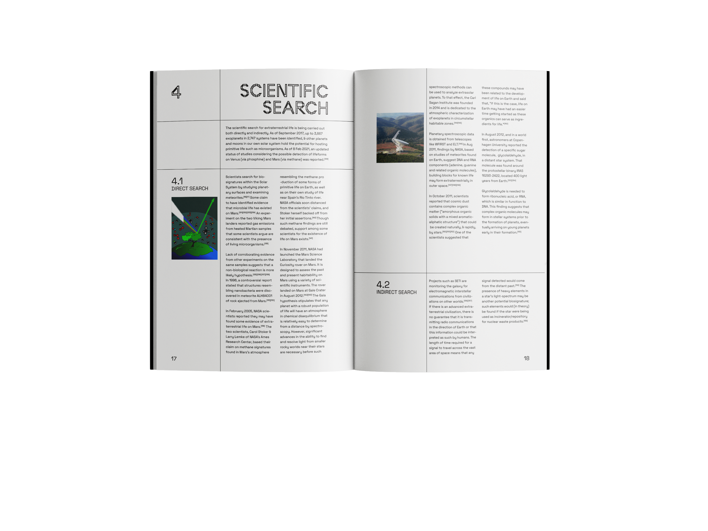
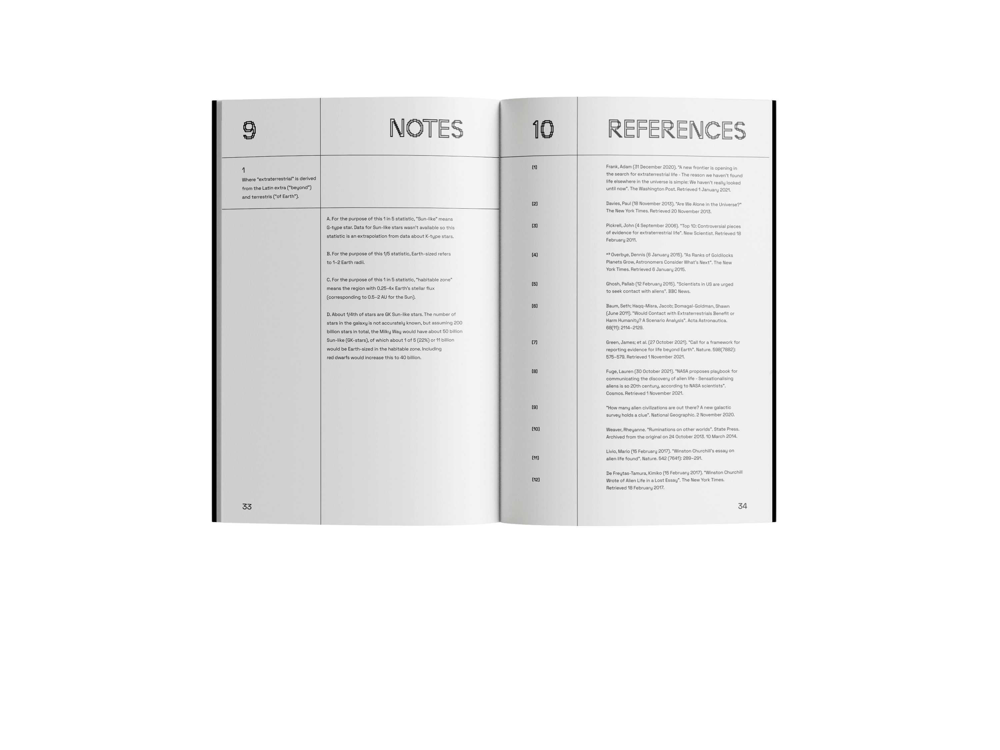

   
Extraterrestrial Life:
A WikiBook
With a focus on typography and grid systems, the Extraterrestrial Life WikiBook is a Wikipedia page in book form. The main font, Terminal Grotesque by Raphaël Bastide is inspired by the topic itself.
The font's pixelated nature is an homage to the Arecibo message featured on the back cover, while its main form is inspired by Futura, the font adorning the plaque left on the Moon by Apollo 11. Its pixilation is limited to a few letters, making the typeface more legible compared to other 8-bit/pixel fonts while maintaining a sense of retro-futurism in relation to the search for alien life and its depictions in ancient art.
The grid system is precise and universal throughout the book, starting at the cover.